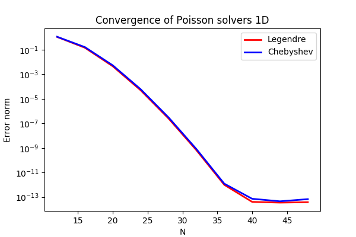

Summary. This is a demonstration of how the Python module shenfun can be used to solve the Poisson equation with Dirichlet boundary conditions in one dimension. Spectral convergence, as shown in Figure 1, is demonstrated. The demo is implemented in a single Python file dirichlet_poisson1D.py, and the numerical method is is described in more detail by J. Shen [1] and [2].
Figure 1: Convergence of 1D Poisson solvers for both Legendre and Chebyshev modified basis function.

Model problem
Poisson equation
Method of manufactured solutions
Implementation
Preamble
Manufactured solution
Discretization
Variational formulation
Solve linear equations
Convergence test
Complete solver
Bibliography
The Poisson equation is given as $$ \begin{align} \nabla^2 u(x) &= f(x) \quad \text{for }\, x \in [-1, 1], \tag{1}\\ u(-1)&=a, u(1)=b, \notag \tag{2} \end{align} $$ where \( u(x) \) is the solution, \( f(x) \) is a function and \( a, b \) are two possibly non-zero constants.
To solve Eq. (1) with the Galerkin method we need smooth basis functions, \( v_k \), that live in the Hilbert space \( H^1(x) \) and that satisfy the given boundary conditions. And then we look for solutions like $$ \begin{equation} u(x) = \sum_{k=0}^{N-1} \hat{u}_k v_k(x), \tag{3} \end{equation} $$
where \( N \) is the size of the discretized problem and the basis is \( V^N=\text{span}\{v_k\}_{k=0}^{N-1} \). The basis functions can, for example, be constructed from Chebyshev, \( T_k(x) \), or Legendre, \( L_k(x) \), functions and we use the common notation \( \phi_k(x) \) to represent either one of them. It turns out that it is easiest to use basis functions with homogeneous Dirichlet boundary conditions $$ \begin{equation} v_k(x) = \phi_k(x) - \phi_{k+2}(x), \tag{4} \end{equation} $$ for \( k=0, 1, \ldots N-3 \), and then the last two are added as two linear basis functions (that belong to the kernel of the Poisson equation) $$ \begin{align} v_{N-2} &= \frac{1}{2}(\phi_0 + \phi_1), \tag{5}\\ v_{N-1} &= \frac{1}{2}(\phi_0 - \phi_1). \tag{6} \end{align} $$ With these two final basis functions it is easy to see that the two last degrees of freedom, \( \hat{u}_{N-2} \) and \( \hat{u}_{N-1} \), now are given as $$ \begin{align} u(-1) &= \sum_{k=0}^{N-1} \hat{u}_k v_k(-1) = \hat{u}_{N-2} = a, \tag{7} \\ u(+1) &= \sum_{k=0}^{N-1} \hat{u}_k v_k(+1) = \hat{u}_{N-1} = b, \tag{8} \end{align} $$ and, as such, we only have to solve for \( \{\hat{u}_k\}_{k=0}^{N-3} \), just like for a problem with homogeneous boundary conditions. We now formulate a variational problem using the Galerkin method: Find \( u \in V^N \) such that $$ \begin{equation} \int_{-1}^1 \nabla^2 u \, v \, w\, dx = \int_{-1}^1 f \, v\, w\, dx \quad \forall v \, \in \, V^N. \tag{9} \end{equation} $$ The weighted integrals, weighted by \( w(x) \), are called inner products, and a common notation is $$ \begin{equation} \int_{-1}^1 u \, v \, w\, dx = \left( u, v\right)_w. \tag{10} \end{equation} $$ The integral can either be computed exactly, or with quadrature. The advantage of the latter is that it is generally faster, and that non-linear terms may be computed just as quickly as linear. For a linear problem, it does not make much of a difference, if any at all. Approximating the integral with quadrature, we obtain $$ \begin{align} \int_{-1}^1 u \, v \, w\, dx &\approx \left( u, v \right)_w^N, \tag{11}\\ &\approx \sum_{j=0}^{N-1} u(x_j) v(x_j) w(x_j), \tag{12} \end{align} $$ where \( w(x_j) \) are quadrature weights. The quadrature points \( \{x_j\}_{j=0}^N \) are specific to the chosen basis, and even within basis there are two different choices based on which quadrature rule is selected, either Gauss or Gauss-Lobatto.
Inserting for test and trialfunctions, we get the following bilinear form and matrix \( A\in\mathbb{R}^{N-2\times N-2} \) for the Laplacian (using the summation convention in step 2) $$ \begin{align*} \left( \nabla^2u, v \right)_w^N &= \left( \nabla^2\sum_{k=0}^{N-3}\hat{u}_k v_{k}, v_j \right)_w^N, \\ &= \left(\nabla^2 v_{k}, v_j \right)_w^N \hat{u}_k, \\ &= A_{jk} \hat{u}_k. \end{align*} $$ Note that the sum in \( A_{jk} \hat{u}_{k} \) runs over \( k=0, 1, \ldots, N-3 \) since the last two degrees of freedom already are known from Eq. (7) and (8), and the second derivatives of \( v_{N-2} \) and \( v_{N-1} \) are zero. The right hand side linear form and vector is computed as \( \tilde{f}_j = (f, v_j)_w^N \), for \( j=0,1,\ldots, N-3 \), where a tilde is used because this is not a complete transform of the function \( f \), but only an inner product.
The linear system of equations to solve for the expansion coefficients of \( u(x) \) is given as $$ \begin{equation} A_{jk} \hat{u}_k = \tilde{f}_j. \tag{13} \end{equation} $$
Now, when \( \hat{u} \) is found by solving this linear system, it may be
transformed to real space \( u(x) \) using (3), and here the contributions
from \( \hat{u}_{N-2} \) and \( \hat{u}_{N-1} \) must be accounted for. Note that the matrix
\( A_{jk} \) (different for Legendre or Chebyshev) has a very special structure that
allows for a solution to be found very efficiently in order of \( \mathcal{O}(N) \)
operations, see [1] and [2]. These solvers are implemented in
shenfun for both bases.
In this demo we will use the method of manufactured
solutions to demonstrate spectral accuracy of the shenfun Dirichlet bases. To
this end we choose an analytical function that satisfies the given boundary
conditions:
$$
\begin{equation}
u_e(x) = \sin(k\pi x)(1-x^2) + a(1+x)/2 + b(1-x)/2, \tag{14}
\end{equation}
$$
where \( k \) is an integer. Now, feeding \( u_e \) through the Laplace operator, we see
that the last two linear terms disappear, whereas the first term results in
in
$$
\begin{align}
\nabla^2 u_e(x) &= \frac{d^2 u_e}{dx^2},
\tag{15}\\
&= -4k \pi x \cos(k\pi x) - 2\sin(k\pi x) - k^2 \pi^2 (1 -
x^2) \sin(k \pi x). \tag{16}
\end{align}
$$
Now, setting \( f_e(x) = \nabla^2 u_e(x) \) and solving for \( \nabla^2 u(x) = f_e(x) \), we can compare the numerical solution \( u(x) \) with the analytical solution \( u_e(x) \) and compute error norms.
We will solve the Poisson problem using the shenfun Python module. The first thing needed is then to import some of this module's functionality plus some other helper modules, like Numpy and Sympy:
from shenfun import inner, div, grad, TestFunction, TrialFunction, Function, \
project, Dx, Array, chebyshev, legendre
import numpy as np
from sympy import symbols, cos, sin, exp, lambdify
We use sympy for the manufactured solution and numpy for testing.
The exact solution \( u_e(x) \) and the right hand side \( f_e(x) \) are created using sympy as follows
a = -1
b = 1
k = 4
x = symbols("x")
ue = sin(k*np.pi*x)*(1-x**2) + a*(1 + x)/2. + b*(1 - x)/2.
fe = ue.diff(x, 2)
# Lambdify for faster evaluation
ul = lambdify(x, ue, 'numpy')
fl = lambdify(x, fe, 'numpy')
These solutions are now valid for a continuous domain. The next step is thus to discretize, using a discrete mesh \( \{x_j\}_{j=0}^{N-1} \) and a finite number of basis functions.
Note that it is not mandatory to use sympy for the manufactured solution. Since the
solution is known (16), we could just as well simply use Numpy
to compute \( f_e \) at \( \{x_j\}_{j=0}^{N-1} \). However, with Sympy it is much
easier to experiment and quickly change the solution.
We create a basis with a given number of basis functions, and extract the computational mesh from the basis itself
N = 32
SD = chebyshev.bases.ShenDirichletBasis(N, plan=True, bc=(a, b))
#SD = legendre.bases.ShenDirichletBasis(N, plan=True, bc=(a, b))
X = SD.mesh(N)
Note that we can either choose a Legendre or a Chebyshev basis. The keyword plan is used to tell the class ShenDirichletBasis that it can go ahead and plan its transforms with pyfftw, because this basis will not be a part of a tensorproductspace, in which case the planning would need to wait.
The variational problem (9) can be assembled using shenfun's TrialFunction, TestFunction and inner functions.
u = TrialFunction(SD)
v = TestFunction(SD)
# Assemble left hand side matrix
A = inner(v, div(grad(u)))
# Assemble right hand side
fj = fl(X)
f_hat = Array(SD)
f_hat = inner(v, fj, output_array=f_hat)
Finally, solve linear equation system and transform solution from spectral \( \{\hat{u}_k\}_{k=0}^{N-1} \) vector to the real space \( \{u(x_j)\}_{j=0}^N \) and then check how the solution corresponds with the exact solution \( u_e \).
u_hat = A.solve(f_hat)
uj = SD.backward(u_hat)
ue = ul(X)
print("Error=%2.16e" %(np.linalg.norm(uj-ue)))
assert np.allclose(uj-ue)
A complete solver is given in Sec. Complete solver. This solver is created such that it takes in two commandline arguments and prints out the \( l_2 \)-errornorm of the solution in the end. We can use this to write a short script that performs a convergence test. The solver is run like
>>> python dirichlet_poisson1D.py 32 legendre
Error=6.5955040031498912e-10
for a discretization of size \( N=32 \) and for the Legendre basis. Alternatively, change legendre to chebyshev for the Chebyshev basis.
We set up the solver to run for a list of \( N=[12, 16, \ldots, 48] \), and collect the errornorms in arrays to be plotted. Such a script can be easily created with the subprocess module
import subprocess
N = range(12, 50, 4)
error = {}
for basis in ('legendre', 'chebyshev'):
error[basis] = []
for i in range(len(N)):
output = subprocess.check_output("python dirichlet_poisson1D.py {} {}".format(N[i], basis), shell=True)
exec(output) # Error is printed as "Error=%2.16e"%(np.linalg.norm(uj-ua))
error[basis].append(Error)
The error can be plotted using matplotlib, and the generated figure is shown in the summary's Fig. 1. The spectral convergence is evident and we can see that after \( N=40 \) roundoff errors dominate as the errornorm trails off around \( 10^{-14} \).
plt.figure(figsize=(6, 4))
for basis, col in zip(('legendre', 'chebyshev'), ('r', 'b')):
plt.semilogy(N, error[basis], col, linewidth=2)
plt.title('Convergence of Poisson solvers 1D')
plt.xlabel('N')
plt.ylabel('Error norm')
plt.savefig('poisson1D_errornorm.png')
plt.legend(('Legendre', 'Chebyshev'))
plt.show()
>>> python dirichlet_poisson1D.py legendre
or similarly with chebyshev instead of legendre.
import sys
import importlib
from sympy import symbols, cos, sin, exp, lambdify
import numpy as np
from shenfun import inner, div, grad, TestFunction, TrialFunction, Function, \
project, Dx, Array
assert len(sys.argv) == 3
assert sys.argv[-1] in ('legendre', 'chebyshev')
assert isinstance(eval(sys.argv[-2]), int)
# Collect basis and solver from either Chebyshev or Legendre submodules
basis = sys.argv[-1]
shen = importlib.import_module('.'.join(('shenfun', basis)))
Basis = shen.bases.ShenDirichletBasis
# Use sympy to compute a rhs, given an analytical solution
a=-1
b=1
x = symbols("x")
ue = sin(4*np.pi*x)*(1-x**2) + a*(1 + x)/2. + b*(1 - x)/2.
#ue = (1-x**2)
fe = ue.diff(x, 2)
# Lambdify for faster evaluation
ul = lambdify(x, ue, 'numpy')
fl = lambdify(x, fe, 'numpy')
# Size of discretization
N = eval(sys.argv[-2])
SD = Basis(N, plan=True, bc=(a, b))
X = SD.mesh(N)
u = TrialFunction(SD)
v = TestFunction(SD)
# Get f on quad points
#fj = fl(X)
fj = np.array([fe.subs(x, j) for j in X], dtype=np.float)
# Compute right hand side of Poisson equation
f_hat = Array(SD)
f_hat = inner(v, fj, output_array=f_hat)
if basis == 'legendre':
f_hat *= -1.
# Get left hand side of Poisson equation
if basis == 'chebyshev':
A = inner(v, div(grad(u)))
else:
A = inner(grad(v), grad(u))
f_hat = A.solve(f_hat)
uj = SD.backward(f_hat)
# Compare with analytical solution
ua = ul(X)
print("Error=%2.16e" %(np.linalg.norm(uj-ua)))